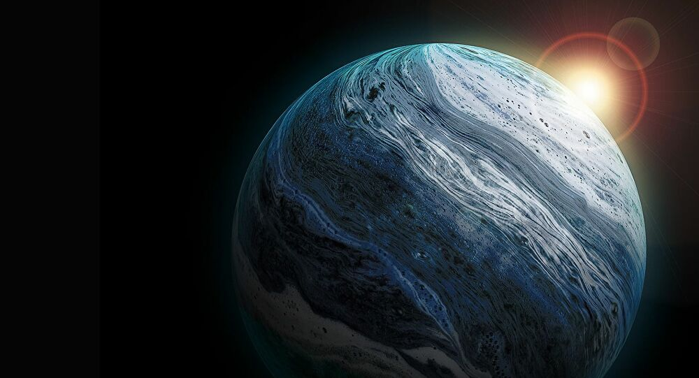

</head>
<body>
<body background="fondo.jpg">


<FONT FACE="Arial"><FONT COLOR="white">
<H3>

<ol start=3>
<FONT FACE="Arial">
<li><a href="#Neptuno:">Neptuno.</a></li>
<p>
<li><a href="#Urano:">Urano.</a></li>
</ol>
</H3>
<div align="center"></div>

<hr size="6px" color="red"></hr>


<FONT FACE="Arial"><FONT COLOR="green">
<ol start=3>


<FONT FACE="Arial">

<li><a name="Neptuno:"><font size="3">Neptuno.</A></A></A></FONT></FONT></li><FONT FACE="Arial"><font size="3">
<P ALIGN="justify"><FONT COLOR="white">Neptuno es el octavo planeta en distancia respecto al Sol y el más lejano del sistema solar. Forma parte de los denominados planetas exteriores, y dentro de estos, es uno de los gigantes helados, y es el primero que fue descubierto gracias a predicciones matemáticas. Su nombre fue puesto en honor al dios romano del mar —Neptuno—, y es el cuarto planeta en diámetro y el tercero más grande en masa. Su masa es diecisiete veces la de la Tierra y ligeramente mayor que la de su planeta «gemelo» Urano, que tiene quince masas terrestres y no es tan denso. En promedio, Neptuno orbita el Sol a una distancia de 30,1 ua. Su símbolo astronómico es ♆, una versión estilizada del tridente del dios Neptuno.
Tras el descubrimiento de Urano, se observó que las órbitas de Urano, Saturno y Júpiter no se comportaban tal como predecían las leyes de Kepler y de Newton. Adams y Le Verrier, de forma independiente, calcularon la posición de un hipotético planeta, Neptuno, que finalmente fue encontrado por Galle, el 23 de septiembre de 1846, a menos de un grado de la posición calculada por Le Verrier. Más tarde se advirtió que Galileo ya había observado Neptuno en 1612, pero lo había confundido con una estrella.
</P ALIGN="justify">
</font>
</h3>

<p>
<h3>
<P ALIGN="right">
<a href="#"Neptuno:"><button>Inicio</button></a>
</P ALIGN="right">
</h3>
</p>

<hr size="6px" color="red"></hr>


<FONT FACE="Arial"><FONT COLOR="green">


<li><a name="Urano:"><font size="3">Urano.</A></A></FONT></FONT></li><FONT FACE="Arial"><font size="3">
<P ALIGN="justify"><FONT COLOR="white">Urano es el séptimo planeta del sistema solar, el tercero de mayor tamaño, y el cuarto más masivo. Se llama así en honor de la divinidad griega del cielo Urano (del griego antiguo Οὐρανός), el padre de Crono (Saturno) y el abuelo de Zeus (Júpiter). Aunque es detectable a simple vista en el cielo nocturno, no fue catalogado como planeta por los astrónomos de la antigüedad debido a su escasa luminosidad y a la lentitud de su órbita.13​ Sir William Herschel anunció su descubrimiento el 13 de marzo de 1781, ampliando las fronteras entonces conocidas del sistema solar, por primera vez en la historia moderna. Urano es también el primer planeta descubierto por medio de un telescopio.
Urano es similar en composición a Neptuno, y los dos tienen una composición diferente de los otros dos gigantes gaseosos (Júpiter y Saturno). Por ello, los astrónomos a veces los clasifican en una categoría diferente, los gigantes helados. La atmósfera de Urano, aunque es similar a la de Júpiter y Saturno por estar compuesta principalmente de hidrógeno y helio, contiene una proporción superior tanto de «hielos»nota 4​ como de agua, amoníaco y metano, junto con trazas de hidrocarburos.9​nota 5​ Posee la atmósfera planetaria más fría del sistema solar, con una temperatura mínima de 49 K (-224 °C). Asimismo, tiene una estructura de nubes muy compleja, acomodada por niveles, donde se cree que las nubes más bajas están compuestas de agua y las más altas de metano.9​ En contraste, el interior de Urano se encuentra compuesto principalmente de hielo y roca.
</P ALIGN="justify">
</ol>

<p>
<h3>
<P ALIGN="right">
<a href="#"Urano:"><button>Inicio</button></a>
</P ALIGN="right">
</h3>
<p>

</body>
</html>


